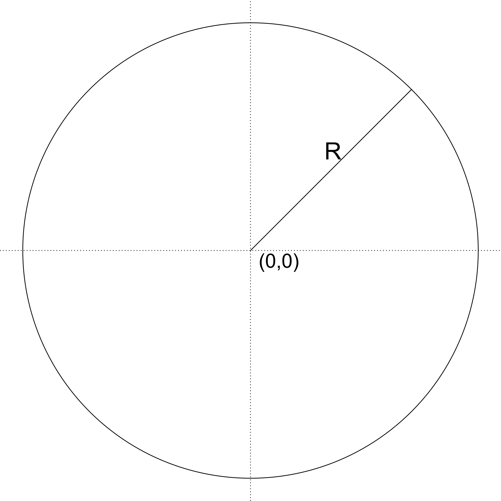
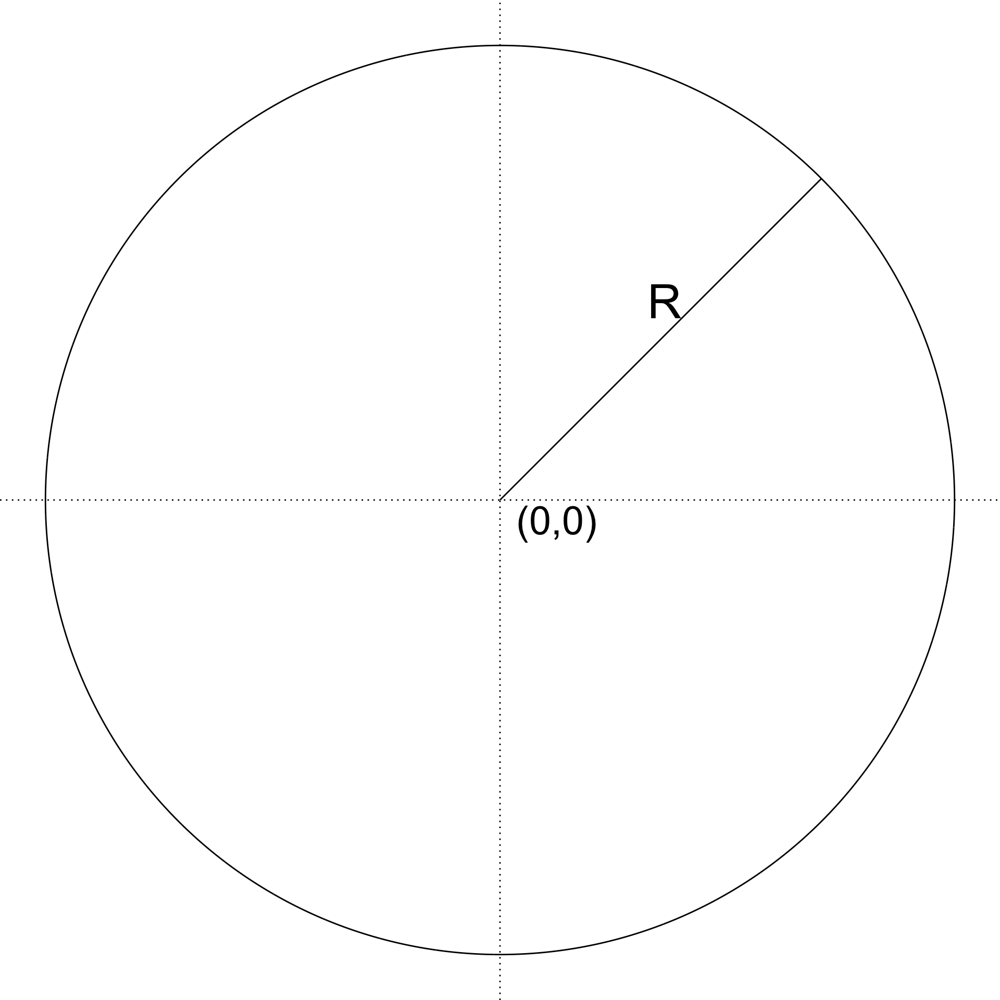
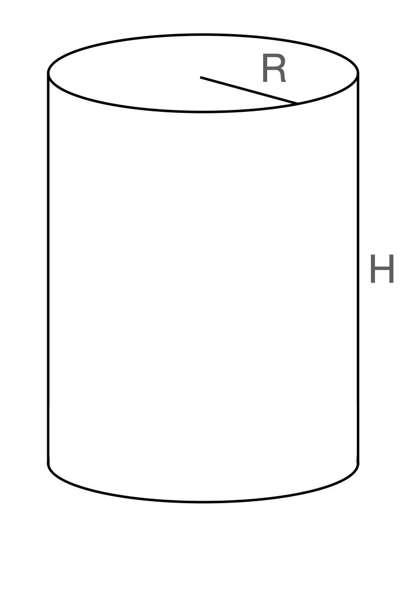
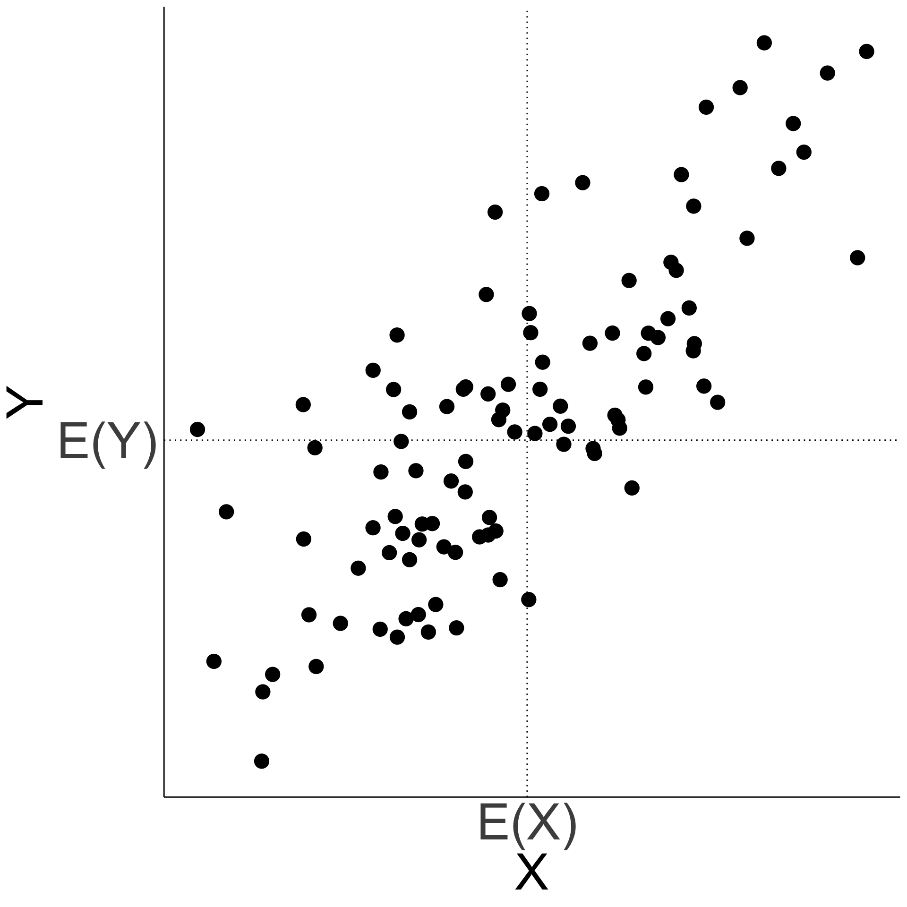
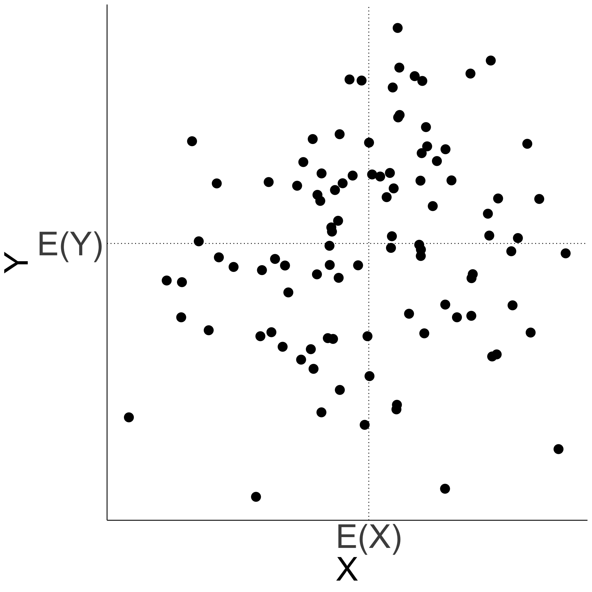
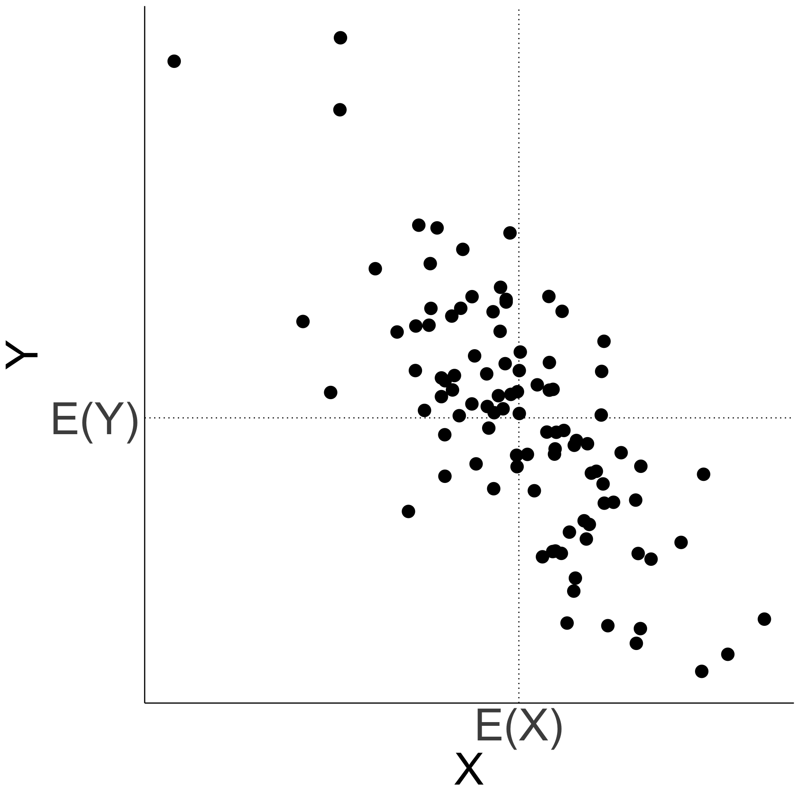
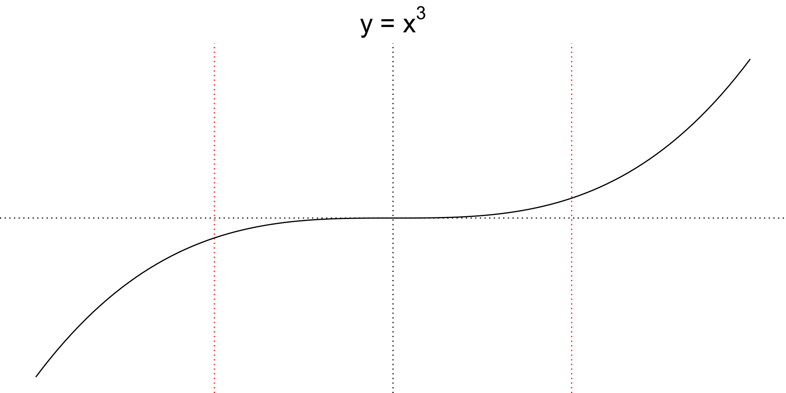
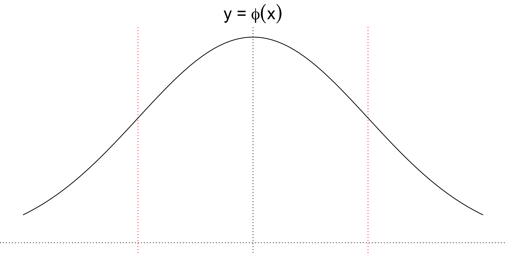
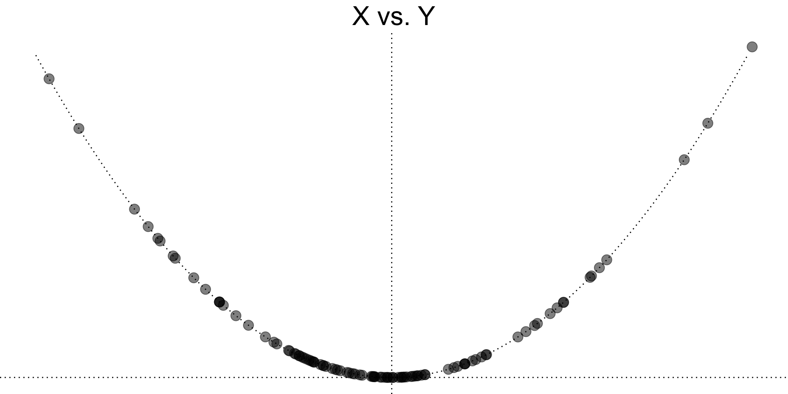

STA237: Probability, Statistics, and Data Analysis I
PhD Student, DoSS, University of Toronto
Wednesday, June 7, 2023
Consider a circle with radius \(R\). Suppose \(R\) is a continuous random variable with probability density function \(f_R\).
\[f_R(r)=\begin{cases} \frac{3}{16}(r-2)^2 & 0\le r \le 4 \\ 0 & \text{otherwise.} \end{cases}\]

\[f_R(r)=\begin{cases} \frac{3}{16}(r-2)^2 & 0\le r \le 4 \\ 0 & \text{otherwise.} \end{cases}\]
Let \(A\) be the area. What is the expected value of \(A\)?
\[f_R(r)=\begin{cases} \frac{3}{16}(r-2)^2 & 0\le r \le 4 \\ 0 & \text{otherwise.} \end{cases}\]

Now suppose we are interested in the volume of the cylinder with height \(H\) where \(H\sim U(0, 10)\) independent of \(R\).
What is the expected value of the volume, \(V\), of the cylinder?
\[E\left(V\right)=E\left(A H\right)= E\left[g\left(A,H\right)\right],\]
where \(g\left(x,y\right)=x\cdot y\).
\(g:\mathbb{R}^2\to \mathbb{R}\)
Let \(X\) and \(Y\) be random variables, and let \(g:\mathbb{R}^2\to\mathbb{R}\) be a function. If \(X\) and \(Y\) are discrete random variables with values \(a_1\), \(a_2\), … and \(b_1\), \(b_2\), …, respectively, and with joint probability mass function \(p_{X,Y}\), then
\[E\left[g\left(X,Y\right)\right]=\sum_i\sum_j g\left(a_i,b_j\right)p_{X,Y}\left(a_i,b_j\right).\]
If \(X\) and \(Y\) are continuous random variables with joint probability density function \(f_{X,Y}\), then
\[E\left[g\left(X,Y\right)\right]=\int_{-\infty}^\infty\int_{-\infty}^\infty g\left(x,y\right)f_{X,Y}\left(x,y\right)dxdy.\]
\[f_R(r)=\begin{cases} \frac{3}{16}(r-2)^2 & 0\le r \le 4 \\ 0 & \text{otherwise.} \end{cases}\]
\(A\) and \(H\) are independent because \(A\) is a function of \(R\), and \(R\) and \(H\) are independent. Thus, \(A\) and \(H\) are independent.
Let \(U\) and \(V\) be two random variables with joint probability distribution defined by the following probability mass function.
u |
||||
|---|---|---|---|---|
| 0 | 1 | 2 | \(p_V(v)\) | |
| v | ||||
| 0 | 1/4 | 0 | 1/4 | 1/2 |
| 1 | 0 | 1/2 | 0 | 1/2 |
| \(p_U(u)\) | 1/4 | 1/2 | 1/4 | 1 |
Compute \(E(U+V)\).
How about \(E(U)+E(V)\)?
We have \(E[U + V]=E[U]+E[V]\).
\(\color{forestgreen}{\sum_v p_{U,V}(u,v)}\) and \(\color{DarkOrchid}{\sum_u p_{U,V}(u,v)}\) are the marginal pmfs of \(U\) and \(V\) respectively.
In general, \(E[g(U,V)]=g(E(U), E(V))\) when \(g\) is a linear function.
For all constants \(a\), \(b\), and \(c\) and random variables \(X\) and \(Y\), we have
\[E\left(aX+bY+c\right)\] \[\quad=aE\left(X\right)+bE\left(Y\right)+c.\]
For two continuous random variables with joint probability density function \(f\), show that
\[E[X+Y]=E[X]+E[Y].\]
For two continuous random variables with joint probability density function \(f\), show that
\[E[X+Y]=E[X]+E[Y].\]
The change-of-variable for 2D expectation formula and linearity of expectations can be extended to any number of random variables - both discrete and continuous.
Let \(U\) and \(V\) be two random variables with joint probability distribution defined by the following probability mass function.
u |
||||
|---|---|---|---|---|
| 0 | 1 | 2 | \(p_V(v)\) | |
| v | ||||
| 0 | 1/4 | 0 | 1/4 | 1/2 |
| 1 | 0 | 1/2 | 0 | 1/2 |
| \(p_U(u)\) | 1/4 | 1/2 | 1/4 | 1 |
Compute \(E(UV)\).
How about \(E(U)E(V)\)?
We have \(E[g(U,V)]=E[UV]=E(U)E(V)=g(E[U],E[V])\) when \(g\) is NOT a linear function. We will discuss the condition for this to hold true.
Consider random variables \(X\) and \(Y\) with joint probability density function \(f\).
\[f(x,y)=\begin{cases}4x^2y + 2y^5 & x\in[0,1], \\ & \ y\in [0,1]\\ 0 &\text{otherwise}\end{cases}\]
Compute \(E[XY]\).
Consider random variables \(X\) and \(Y\) with joint probability density function \(f\).
\[f(x,y)=\begin{cases}4x^2y + 2y^5 & x\in[0,1], \\ & \ y\in [0,1]\\ 0 &\text{otherwise}\end{cases}\]
\(f_X(x)=2x^2+1/3\) when \(x\in[0,1]\) and 0 otherwise.
\(f_Y(y)=4y/3+2y^5\) when \(y\in[0,1]\) and 0 otherwise.
Compute \(E[X]E[Y]\).
We have \(E[XY]\neq E(X)E(Y)\).
\[E[X]E[Y]=\int_0^1x\left(2x^2+\frac{1}{3}\right)dx\int_0^1 y \left(\frac{4y}{3}+2y^5\right)dy\] \[=\int_0^1\int_0^1 xy \color{forestgreen}{\left(2x^2+\frac{1}{3}\right) \left(\frac{4y}{3}+2y^5\right)}dxdy\]
vs.
\[E[XY]=\int_0^1\int_0^1 xy\color{forestgreen}{\left(4x^2y+2y^5\right)}dxdy\]
When random variables \(X\) and \(Y\) are dependent,
\(E[XY]\) MAY NOT equal \(E[X]E[Y]\).
When random variables \(X\) and \(Y\) are independent,
\(E[XY] = E[X]E[Y]\) is true.
\[E(X+Y)\]
\[=E(X)+E(Y)\]
We can use the linearity of expectation property.
The property applies whether or not the random variables are independent.
\[\text{Var}(X+Y)\]
\[\text{Var}(X)+\text{Var}(Y)\]
\(E\left(XY\right)\) may not equal \(E(X)E(Y)\).
\(\text{Var}(X+Y)\) may not the same as \(\text{Var}(X)+\text{Var}(Y)\).
In other words, \(\color{darkorchid}{E\left(XY\right) - E(X)E(Y)}\) may be non-zero.
We use \({E\left(XY\right) - E(X)E(Y)}\) to measure linear relationship between \(X\) and \(Y\).
The product of \(X-E(X)\) and \(Y-E(Y)\) tells us whether \(X\) and \(Y\) agree in their displacement from their respective means.
Let \(X\) and \(Y\) be two random variables. The covariance between \(X\) and \(Y\) is defined as
\[\text{Cov}\left(X,Y\right)\] \[\quad=E\left[\left(X-E\left[X\right]\right)\left(Y-E\left[Y\right]\right)\right].\]
We use \({E\left(XY\right) - E(X)E(Y)}\) to measure linear relationship between \(X\) and \(Y\).
Let \(X\) and \(Y\) bet two random variables. The covariance between \(X\) and \(Y\) is defined as
\[\text{Cov}\left(X,Y\right)\] \[\quad=E\left[\left(X-E\left[X\right]\right)\left(Y-E\left[Y\right]\right)\right]\]
or equivalently,
\[E\left[XY\right]-E\left[X\right]E\left[Y\right].\]
Positively correlated \[\text{Cov}\left(X,Y\right)>0\]

Uncorrelated \[\text{Cov}\left(X,Y\right)=0\]

Negatively correlated \[\text{Cov}\left(X,Y\right)<0\]

u |
||||
|---|---|---|---|---|
| 0 | 1 | 2 | \(p_V(v)\) | |
| v | ||||
| 0 | 1/4 | 0 | 1/4 | 1/2 |
| 1 | 0 | 1/2 | 0 | 1/2 |
| \(p_U(u)\) | 1/4 | 1/2 | 1/4 | 1 |
\[f_R(r)=\begin{cases} \frac{3}{16}(r-2)^2 & 0\le r \le 4 \\ 0 & \text{otherwise.} \end{cases}\quad\quad H\sim U(0,10)\]
Compute \(\text{Cov}(V,H)=E(VH)-E(V)E(H)\).
\[\text{Cov}(V,H)=\frac{20\cdot32}{3}\pi - 32\pi \cdot 5=\frac{160}{3}\pi\]
Covariance behaves similar to variance under a linear transformation.
\[\text{Cov}\left(aX+b, cY+d\right)\] \[=ac\cdot\text{Cov}\left(X,Y\right)\]
for constants \(a\), \(b\), and \(c\) and random variables \(X\) and \(Y\).
Variance is covariance between two identical random variables, or covariance with itself.
\[\text{Var}\left(X\right)\] \[=\text{Cov}\left(X,X\right)\]
When random variables \(X\) and \(Y\) are uncorrelated,
\[\text{Cov}\left(X,Y\right)=0\] \[=E\left(XY\right)-E\left(X\right)E\left(Y\right)\]
\[\iff\] \[E\left(XY\right)=E\left(X\right)E\left(Y\right)\]
Let \(X\sim N\left(0,1\right)\) and \(Y=X^2\).
Are they correlated?
For \(Y\sim N(\mu, \sigma^2)\), \(E[Y]=\mu\) and \(\text{Var}(Y)=\sigma^2\).
\[E\left(X^3\right)=\int_{-\infty}^\infty x^3 \phi(x)dx\]
\[\implies E\left(X^3\right)=0\]


Let \(X\sim N\left(0,1\right)\) and \(Y=X^2\).
Are they correlated?
For \(Y\sim N(\mu, \sigma^2)\), \(E[Y]=\mu\) and \(\text{Var}(Y)=\sigma^2\).
\[\text{Cov}(X,Y)=0\]
Are they independent?

No. \(Y\) is \(X^2\).
Correlation measures the strength of the linear relationship between two random variables. Dependent random variables may have non-linear relationships that translate to zero correlation.
\[\text{Cov}(X,Y)=0\] \[\quad\;\not\!\!\!\implies F_X(x)F_Y(y)=F_{X,Y}(x,y)\]
The denominator normalizes covariance to a dimensionless (unitless) measurement.
\(\rho(X,Y) \in [-1,1]\) regardless of the magnitudes of \(X\) and \(Y\).
Allows us the compare the strength of correlation based on the magnitude.
Let \(X\) and \(Y\) be two random variables. The correlation coefficient \(\rho\left(X,Y\right)\) is defined
to be \(0\) if \(\text{Var}\left(X\right)=0\) or \(\text{Var}\left(Y\right)=0\), and
\[\rho\left(X,Y\right)=\frac{\text{Cov}\left(X,Y\right)}{\sqrt{\text{Var}\left(X\right)\text{Var}\left(Y\right)}}\]
otherwise.
Determine \(\rho(U, U^2)\) when \(U\sim U(0,a)\) for some \(a>0\).
\[\begin{align*} & \rho\left(U,U^2\right)\\ =& \frac{a^3/12}{\sqrt{\left(a^2/12\right)\left(4a^4/45\right)}}\\ =& \frac{\sqrt{15}}{4} \end{align*}\]
\(\rho\) is free of \(a\). The magnitude \(U\) doesn’t effect the dimensionless measure.
Recall for any two random variables \(X\) and \(Y\),
\[\text{Var}(X+Y)\] \[=\color{forestgreen}{E\left(X^2\right) - E(X)^2 + E\left(Y^2\right) - E(Y)^2}\] \[+ 2\left[\color{darkorchid}{E\left(XY\right) - E(X)E(Y)}\right]\]
\[\text{or,}\]
\[\color{forestgreen}{\text{Var}(X)+\text{Var}(Y)} + 2\color{darkorchid}{\text{Cov}(X,Y)}\]
In plain words, the variability of the sum or difference two uncorrelated random variables is the sum of their variability. Mixing two unrelated and unpredictable variables increases the variability.
We can expand the property to \(n\) uncorrelated random variables.
For \(n\) uncorrelated random variables \(X_1\), \(X_2\), …, \(X_n\), we have
\[\text{Var}\left(\sum_{i=1}^n X_i\right)=\sum_{i=1}^n\text{Var}\left(X_i\right).\]
Suppose you start a vlogging channel and start uploading videos on probabilities found in daily life.
Let \(n\) be the number of visitors on a particular day and \(L\) be the number of “likes” you receive from the visitors on the same day.
Suppose \(L\sim \text{Bin}(n,\theta)\) for some \(\theta\in(0,1)\). What is \(E(L)\) and \(\text{Var}(L)\) in terms of \(n\) and \(\theta\)?
We could try computing …
Suppose you start a vlogging channel and start uploading videos on probabilities found in daily life.
Let \(n\) be the number of visitors on a particular day and \(L\) be the number of “likes” you receive from the visitors on the same day.
Suppose \(L\sim \text{Bin}(n,\theta)\) for some \(\theta\in(0,1)\). What is \(E(L)\) and \(\text{Var}(L)\) in terms of \(n\) and \(\theta\)?
Or let \(L = \sum_{i=1}^n L_i\) where \(L_i\sim\text{Ber}(\theta)\) representing each person’s “like” …
Based the linearity of expectations,
\(\text{Var}(L_i)=\theta(1-\theta)\) for all \(i=1,2,...,n\).
Because independence implies the random variables are uncorrelated,
In general,
\[E[X]=n\theta\]
and
\[\text{Var}(X)=n\theta(1-\theta)\]
when \(X\sim\text{Binom}(n,\theta)\).
Now suppose your channel has 10 subscribers and they each visit your channel with a chance of \(6/7\) on any given day, independently.
Let \(S\) be the number of subscribers that visit your channel on a day and \(L\) be the number of “likes” you receive from them. Assume each visitor gives a “like” to a video with a probability of \(8/9\), independently.
What is the expected number of “likes” you receive per day from your subscribers?
Now suppose your channel has 10 subscribers and they each visit your channel with a chance of \(6/7\) on any given day, independently.
Let \(S\) be the number of subscribers that visit your channel on a day and \(L\) be the number of “likes” you receive from them. Assume each visitor gives a “like” to a video with a probability of \(8/9\), independently.
What is the expected number of “likes” you receive per day from your subscribers?
\[S\sim\text{Binom}\left(10,\frac{6}{7}\right)\]
Now suppose your channel has 10 subscribers and they each visit your channel with a chance of \(6/7\) on any given day, independently.
Let \(S\) be the number of subscribers that visit your channel on a day and \(L\) be the number of “likes” you receive from them. Assume each visitor gives a “like” to a video with a probability of \(8/9\), independently.
What is the expected number of “likes” you receive per day from your subscribers?
\[S\sim\text{Binom}\left(10,\frac{6}{7}\right)\]
\[(L|S=s)\sim\text{Binom}\left(s,\frac{8}{9}\right)\]
Now suppose your channel has 10 subscribers and they each visit your channel with a chance of \(6/7\) on any given day, independently.
Let \(S\) be the number of subscribers that visit your channel on a day and \(L\) be the number of “likes” you receive from them. Assume each visitor gives a “like” to a video with a probability of \(8/9\), independently.
What is the expected number of “likes” you receive per day from your subscribers?
\[S\sim\text{Binom}\left(10,\frac{6}{7}\right)\]
\[(L|S=s)\sim\text{Binom}\left(s,\frac{8}{9}\right)\]
Let \(X\) and \(Y\) be two discrete random variables with joint probability mass function \(p\) and marginal probability mass function \(p_X\) for \(X\).
Then, for any \(x\) such that \(p_X(x)>0\), the conditional probability mass function of \(Y\) given \(X=x\) is
\[p_{Y|X}(y|x)=\frac{p(x,y)}{p_X(x)}.\]
Let \(X\) and \(Y\) be two continuous random variables with joint probability density function \(f\) and marginal probability density function \(f_X\) for \(X\).
Then, for any \(x\) such that \(f_X(x)>0\), the conditional probability density function of \(Y\) given \(X=x\) is
\[f_{Y|X}(y|x)=\frac{f(x,y)}{f_X(x)}.\]
We have
\[p_{L|S}(l|s)=\binom{s}{l}\left(\frac{8}{9}\right)^l\left(\frac{1}{9}\right)^{s-l}\] and
\[p_S(s)=\binom{10}{s}\left(\frac{6}{7}\right)^s\left(\frac{1}{7}\right)^{10-s}.\]
We can compute
… and then compute
\[E[L]=\sum_{l=0}^{10} l\cdot p_L(l)\]
Or …
\[L_i=\begin{cases} 1 & \{S_i=1\}\cap\{W_i=1\} \\ 0 & \text{otherwise.} \end{cases}\]
\[\implies L_i\sim\text{Ber}\left(\frac{6}{7}\cdot\frac{8}{9}\right)\] \[\implies L\sim\text{Binom}\left(10, \frac{16}{21}\right)\] \[\implies E[L]=\frac{160}{21}\]
learnr and run R worksheetClick here to install learnr on r.datatools.utoronto.ca
Follow this link to open the worksheet
If you see an error, try:
rlesson08 from Files paneOther steps you may try:
.Rmd and .R files on the home directory of r.datatools.utoronto.caTools > Global Optionsinstall.packages("learnr") in RStudio after the steps above or click hereChapter 10, Dekking et al.
Quick Exercises 10.1, 10.2, 10.3, 10.5
Show that \(X\) and \(Y\) are uncorrelated when they are independent (for both continuous and discrete pairs)
Show that \(E\left(Z^2\right)=1\) when \(Z\sim N\left(0,1\right)\)
All Exercises except 10.20
See a collection of corrections by the author here
Section 5.3, Devore & Berk
© 2023. Michael J. Moon. University of Toronto.
Sharing, posting, selling, or using this material outside of your personal use in this course is NOT permitted under any circumstances.